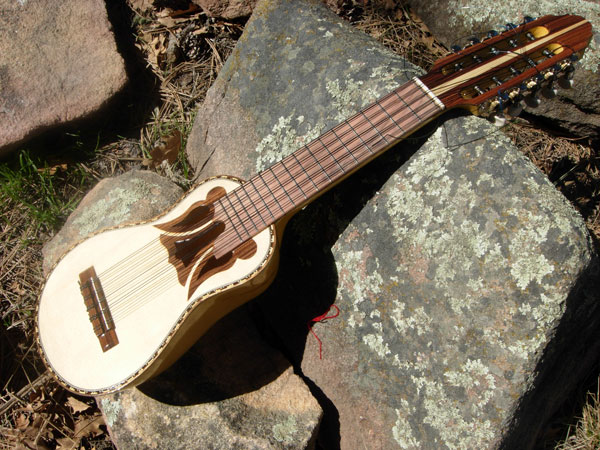

El charango nace de la modificación de un instrumento de cuerda de origen europeo en la región de los Andes,
durante la época virreinal. Generalmente se menciona la mandolina como el instrumento en que se basó la
confección del charango, pero también se señala la vihuela como la base para su construcción. El charanguista
boliviano Ariel Villazón propone que el charango se originó como resultado de una variante directa del timple de
las islas Canarias; es decir que el charango es un timple canario modificado. Las similitudes con la vihuela y
la mandolina no parecen ser tan contundentes como las que tiene con el timple canario. Su hipótesis se basa en
tres puntos clave: primero, la construcción y el tamaño son idénticos; segundo, las notas son las mismas en
algunas de sus afinaciones; y por último, el propio término "charango" proviene de las charangas españolas, que
son parecidas a las tunas o comparsas. Posiblemente los emigrantes canarios solían interpretar en sus comparsas
(charangas) acompañados de timples. De ahí el nombre de «charango». Otra coincidencia adicional y clara se puede
observar en la forma abombada de la caja de resonancia del instrumento. También sugiere que la evolución desde
el timple al charango se dio cuando los materiales para encordar cambiaron de fibras animales a nailon y otros.
Seguramente a algún constructor se le ocurrió, al sustituir las cuerdas de tripa de gato por las de nailon,
duplicar la cantidad de cuerdas para mejorar su sonoridad, siendo la única novedad la MI octava del centro.